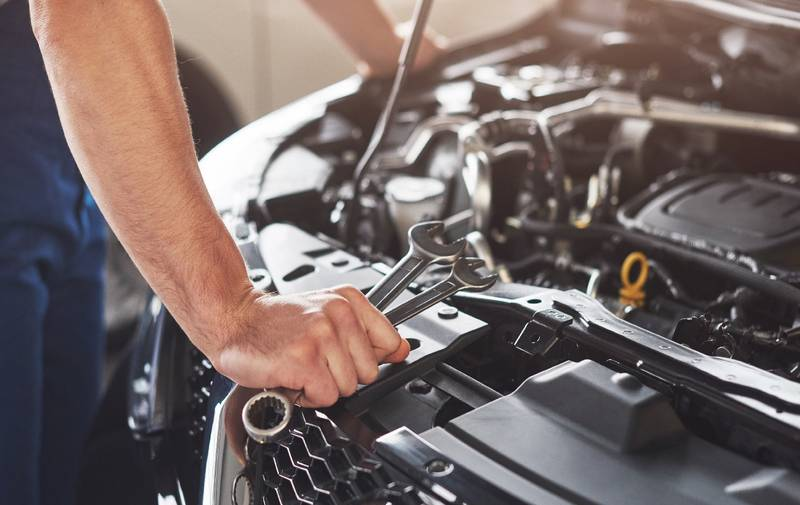

SERVIÇOS
← Voltar para a página inicial
Revisão preventiva ajuda a manter o veículo em boas condições
A avaliação periódica dos principais componentes contribui para a segurança, conservação e funcionamento do automóvel.

O que é uma revisão preventiva?
A revisão preventiva consiste na verificação periódica dos principais componentes do veículo, permitindo identificar desgastes e necessidades de manutenção.
Itens como óleo, filtros, freios, pneus, suspensão e outros componentes podem ser avaliados de acordo com as necessidades do veículo e as recomendações do fabricante.
Por que realizar a revisão?
Manter as revisões em dia pode ajudar a evitar problemas inesperados, além de contribuir para a segurança do motorista e dos passageiros.
Cuide do seu veículo
A prevenção é uma das melhores formas de preservar o funcionamento e a segurança do automóvel.